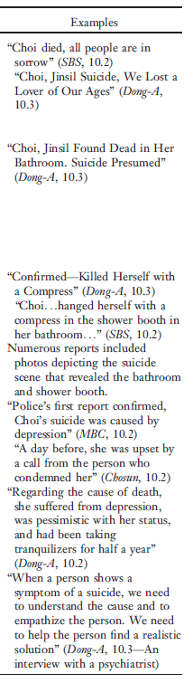
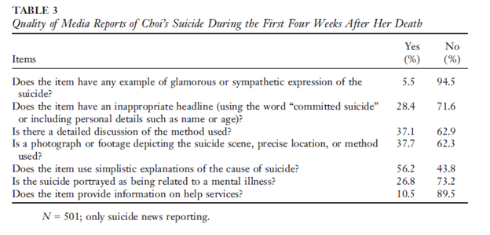

Mass Communication Theory

 Methods
Methods
Quantitative
Research that provides numerical data focusing on the "what". Typically done through surveys or expirements. This is a traditional form of research.
Qualitative
Research that provides non-numerical data focusing on "why" or "how". Typically collected through interviews or observations.
Genres:
- Socio-Linguistics
- Enthography
- Phenomenolgy

Mass Communication Research...
...methods that dig deeper into the "what?", "how?", and "why?"
Blog Entry Five, by Serena Brown. July 15, 2023.
Mass communication research has typically used a positivist approach; however, in recent years qualitative methods have grown in popularity. Quantitative research has always provided numerical data to support a theory and shows correlations between variables and can identify trends in mass communication. To understand the “why” or “how” behind the data in quantitative research, qualitative research should be performed. The two research methods have a symbiotic relationship and using both can provide a thorough understanding of mass communication research. To better understand these two research methods and their relationship, I analyzed two studies that focused on the same phenomena.

South Korea has one of the highest suicide rates in the world. Celebrity suicides are highly publicized by the media and a correlation between a celebrity committing suicide has been linked to increased suicides among South Korean citizens. Suh, Chang, and Kim’s quantitative research into this correlation proves that after a celebrity suicide is broadcast in the media there is an increase in suicide among the population. Their data further shows that the method of suicide used by the celebrity is the primarily method used by those that commit suicide. The number of media reports on the celebrity suicide also show a correlation to the amount of suicides committed by the public. The data shown in Suh, Chang, and Kim’sresearch shows that media has a direct effect on the suicide rate in South Korea.
While the data shown above proves the link between media reports and suicides in South Korea, it does not clarify why South Koreans are committing suicide more often after a celebrity does. This is where qualitative research comes into play. A study by JeSuk Lee and colleagues provides qualitative content analysis on the verbiage and visual communications used by media in broadcasts focusing on celebrity suicides. This study focuses on one celebrity’s suicide by hanging and correlates the media’s use of suicide location photos and detailed descriptions of the suicide method to suicides taking place after the reports. This study shows a clear correlation between public suicide and celebrity suicide using a blend of qualitative and quantitative analysis.

Quantitative may be easier to understand for many as it offers clear numerical values from research. This information can be easily conveyed in charts and graphs that are easily digestible. Qualitative data can appear a bit muddy if researchers do not establish a clear focus on what is to be analyzed and how that data should be presented in the study. The two combined together, however, can create a comprehensive study on the effects of media on the public.

Contact Me

Email me Right Meow!